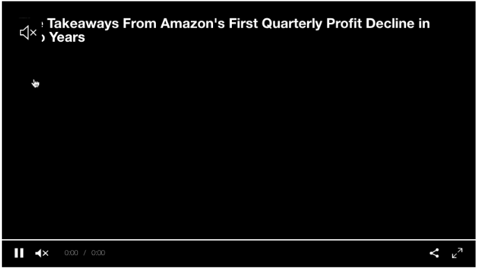
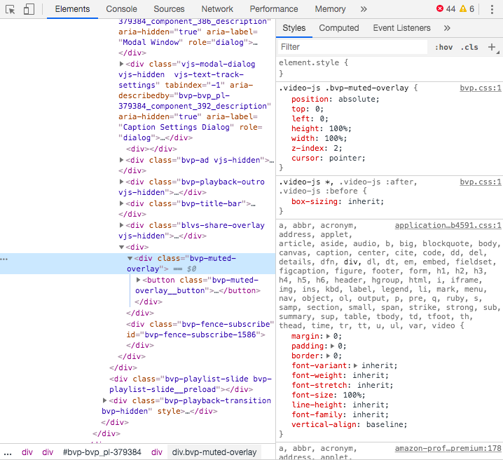

Dark pattern for autoplaying videos: clickjacking pause
Oct 24, 2019 · 154 words · 1 minute read
I recently saw a common clickjacking dark pattern when trying to pause a video the other day.
On a Bloomberg news autoplaying video, the sound is initially muted.

Clicking anywhere on the video will unmute it. It would be pretty easy to have an invisible element overlaying the video that listens for a click, and it looks like that's probably what we have here:

What's interesting is that the control panel (pause, play, scrubbing, etc.) at the bottom of the video is initially shown for a few seconds. This makes it look like you can click it.
If you try to click pause, your click will instead be intercepted by that covering layer and unmute the video. Only then is the control panel clickable.
- User action: mouse click on pause button
- Expected result: pause video
- Actual result: unmute video
Classic misdirection. News websites are notorious for bad UX, and Bloomberg lives up to hype.